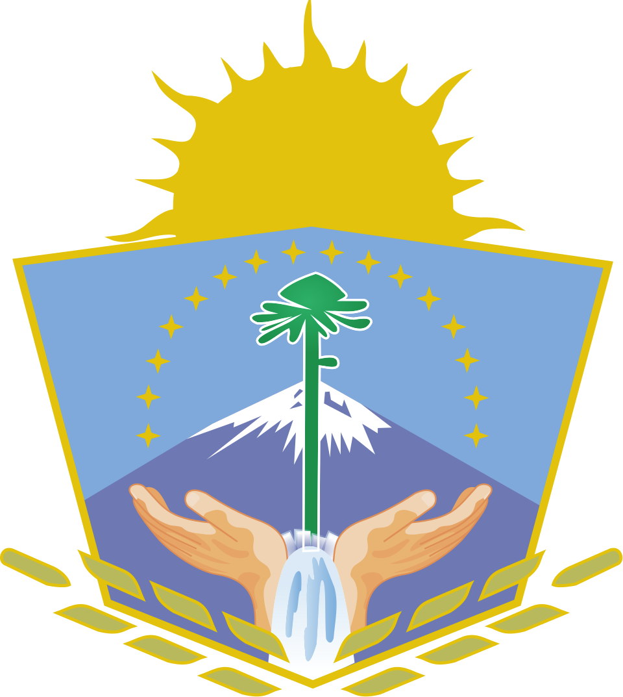
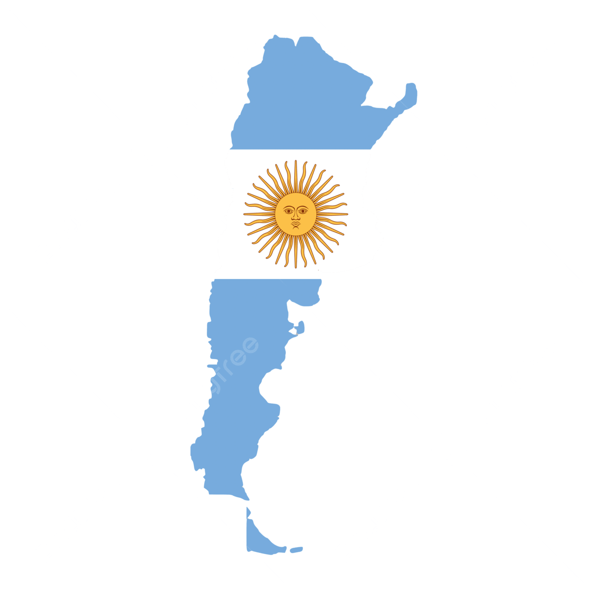

.jpeg)
La Correntosa
Asociación Mutual · Villa La Angostura
Presentación al Concejo Deliberante
¿Qué es una mutual?
“Asociaciones constituidas libremente sin fines de lucro por personas inspiradas en la solidaridad, con el objeto de brindarse ayuda recíproca frente a riesgos eventuales o de contribuir a su bienestar material y espiritual, mediante una contribución periódica.”
— Ley 20.321, Art. 2
Solidaridad
Personas que se asocian voluntariamente para cuidarse y sostenerse mutuamente.
Sin fines de lucro
No hay dueños ni accionistas. Los asociados son, a la vez, los propietarios y los destinatarios del servicio.
Excedentes reinvertidos
Todo lo que se gana se reinvierte en el proyecto y en la comunidad de asociados. Nada se distribuye a título personal.
Marco legal
Regulada por la Ley 20.321 y supervisada por INAES, con estatuto aprobado por asamblea.

Breve historia del mutualismo
Más de un siglo de solidaridad organizada.
Primeras sociedades de socorro mutuo
Nace en Buenos Aires la Sociedad Francesa de Socorros Mutuos, la primera mutual del país. La siguen la San Crispín (1856) y la Unione e Benevolenza (1858), todas creadas por colectividades de inmigrantes europeos.
Compañía Mercantil del Chubut
El 25 de mayo, colonos galeses del valle inferior del Chubut fundan el antecedente más temprano de compra y venta colectiva organizada en Argentina. Surge como respuesta a los altos costos de intermediación. Sucursales en Puerto Madryn, Dolavon, Gaiman, Comodoro Rivadavia y Rawson.
Boom mutualista
Crecimiento explosivo del mutualismo. De las mutuales fundadas en esta década, 697 continúan vigentes hoy —la década con más mutuales activas del país—.
Ley 20.321
Se sanciona la Ley Nacional de Mutuales que aún rige. Define la mutual como “asociación sin fines de lucro, inspirada en la solidaridad, con el objeto de brindarse ayuda recíproca”. Regula los servicios, las categorías de socios y la supervisión por parte de INAES.
Resurgimiento post-pandemia
400 mutuales nuevas se inscriben en lo que va de la década. La pandemia y la crisis de consumo impulsan una nueva ola de organización comunitaria, con foco creciente en soberanía alimentaria y economía solidaria.

Mutualismo en Neuquén
mutuales vigentes en la provincia, con presencia en Neuquén Capital, Cutral Có, Zapala, San Martín de los Andes y —desde 2022— Villa La Angostura.
A. Española de Socorros Mutuos
Fundada el 28 de febrero en Neuquén Capital. La mutual más antigua de la provincia. Asistencia a la colectividad española.
Mutual de la Policía
Primera mutual gremial. Cobertura a personal policial en activo y retirado.
Federación de Mutuales del Neuquén
Creada el 5 de octubre, articula a las mutuales de la provincia y las representa ante INAES. Miembro de la Confederación Argentina de Mutualidades.

Marco provincial
El estado provincial “fomentará y protegerá cooperativas, reconociendo su función social”.
Crea el Consejo Asesor Mutualista para promover la mutualidad y la economía social.
A. M. Universitaria del Comahue
AMUC, nace en la órbita de la Universidad Nacional del Comahue. Se suman luego la Judicial (1983) y Fuente Serena en SMA (1997).
La Correntosa
Inscripta el 17/10/2022, matrícula #136. Primera mutual en la historia de Villa La Angostura y primera mutual de proveeduría abierta a toda la comunidad en la provincia.
.jpeg)
El servicio de proveeduría
Uno de los servicios clásicos del mutualismo argentino, regulado por INAES. Organiza la compra colectiva de alimentos y bienes esenciales en vínculo directo con productores locales, agricultura familiar, PyMEs, cooperativas y fábricas recuperadas.
Productores
Locales, agricultura familiar,
PyMEs, cooperativas,
fábricas recuperadas.
La Mutual
Compra en forma colectiva,
sin intermediarios.
Asociados
Acceso a alimentos sanos
y de origen conocido.

Cómo se forma el precio
~50–60% del valor final. Inversión y trabajo de la familia productora.
Logística, transporte, mermas, administración, trabajo organizativo.
Un pequeño porcentaje (5–10%) destinado al crecimiento y mejora del espacio.
Al final del mes: ingresos − egresos = excedentes.
El objetivo de un comercio es generar ganancias para repartir entre dueños o inversores. El objetivo de una mutual es sostener servicios de calidad para sus asociados. Los excedentes no se reparten: obligatoriamente se reinvierten siempre en mejorar el servicio, el espacio y el proyecto. Todo queda dentro del circuito, siempre.
Distintos objetivos, distintos modelos.
Mutuales de proveeduría en Argentina
La Correntosa no está sola. El servicio tiene décadas de trayectoria en todo el país.
Carlos Mugica
Córdoba · +50 productores · 2015
AMECRO
Rosario · +30 años · 2 locales
Proveeduría Mutual Argentina
Córdoba · Red nacional · Online
La Mediterránea
Córdoba · 700 m² · FEMUCOR
Mutual MAVIC
Online · Food Pack · Envío nacional
Patagonia Sur
Trelew · Comarca Andina · Epuyén
Red Yafütün
San Martín de los Andes · #138 (2024). Inspirada por La Correntosa. Segunda en la cordillera neuquina.

La Correntosa es la primera mutual de proveeduría abierta a toda la comunidad en la cordillera neuquina.
.jpeg)
La Correntosa
La primera mutual en la historia de Villa La Angostura.
Una comunidad joven —entre 25 y 40 años—
con ganas de hacer un aporte concreto al pueblo: alimentos sanos y a precios justos.
Creemos en un consumo que transforma: más justo, consciente y comunitario.
Compras comunitarias en escuelas
Desde la pandemia, desde la Mesa de Asociativismo, sostenemos una compra mensual sin interrupción.
24 compras · ~50 asociados
Inscripción formal
El 17 de octubre nos constituimos como mutual. Matrícula #136. Primera en la historia de VLA.
24 compras · ~100 asociados
Módulo Despensa nacional
Seleccionados entre 59 sitios del país (Min. Obras Públicas). Llegan los 2 containers a Millaqueo 124.
Habíamos alcanzado el nivel 5 del Financiamiento del Espacio Asociativo Integral (galpón MOP). No prosperó por cambio de gestión.
~38 compras · 250 asociados
Apertura al público
En mayo abre la despensa. 300+ productos, 27+ productores en red. Ord. 4124/2024 aprueba el comodato. Plantación de frutales.
~50 compras · 500 asociados · 4 días/sem
Techo y consolidación
1er crédito IADEP $12M + $10M reinversión mutual. Aporte no reintegrable municipal $1M. Compostera comunitaria.
~62 compras · 800 asociados · 6 días/sem
Cerramiento completo
2do crédito IADEP $30M pre-aprobado. Paredes, baño, piso, equipamiento de frío. Proyecto multiuso.
~66 compras · 900+ asociados · 6 días/sem

Lo que nos agrupa
Los ideales que sostienen el proyecto —lo que nos junta una y otra vez—.
Comunidad en la cordillera
Generar encuentro en una región donde el clima y la distancia muchas veces nos separan. Que vecinos y vecinas se reconozcan, compartan un espacio y se organicen para hacer cosas juntos.
Soberanía alimentaria
Como horizonte hacia dónde caminar. Recuperar el derecho a decidir qué se produce y qué se come, entendiendo las dificultades particulares de producir en la cordillera.
Consumidores, no clientes
Recuperar la relación con el alimento: saber qué comemos, de dónde viene, quién lo produjo y cómo. Decidir con información, no con marketing.
.jpeg)
Agroecología
Aprender, compartir y divulgar prácticas agroecológicas. Acompañar a productores en transición, porque el cómo se produce importa tanto como el qué.
Economía a escala humana
Apoyar a cooperativas, agricultura familiar, PyMEs y fábricas recuperadas. Priorizar una producción de escala reducida y calidad comprobada, fortaleciendo el entramado productivo que las cadenas concentradas dejan afuera.
Mercados de cercanía
Potenciar los circuitos cortos: que la economía circule cerca y se quede en el territorio. Red regional que articula productores del Bolsón, El Hoyo, Plottier, Picun Leufú y el Alto Valle.
.jpeg)


La misma lógica de un club de barrio
Cambia la actividad, pero el espíritu es el mismo.
Un club de barrio
Tiene socios, no clientes.
No busca ganar plata: busca sostener un espacio de encuentro a través del deporte en equipo.
Los excedentes vuelven en mejores instalaciones y más servicios.
Genera una cancha, una pileta, un lugar para juntarse.
Se sostiene con el compromiso colectivo.
Una mutual como la nuestra
Tiene asociados, no clientes.
No busca ganar plata: busca sostener un espacio de encuentro a través del acceso a alimentos justos.
Los excedentes vuelven en mejor despensa, más productores y talleres.
Genera soberanía alimentaria: despensa, red, espacio para aprender.
Se sostiene con el compromiso colectivo.
Donde el club organiza el deporte, nosotros organizamos la alimentación.
Practicar un deporte no lo pensamos como una transacción comercial: es salud, encuentro, cuidado. Creemos que alimentarnos merece ese mismo lugar — salud, cultura, organización con otros consumidores y vínculo con quienes producen.
Lo que venimos haciendo
Seis años de trabajo sostenido, en números concretos.
membresía gratuita
mensuales sin interrupción
desde noviembre 2020
desde la pandemia
la despensa abierta
al público
“Compartiendo saberes”
$42M IADEP + $9M reinversión
propia + $1M aporte municipal
.jpeg)

Entramar con otras organizaciones
No creemos que esto pueda sostenerse en soledad.
Convenios
Federaciones
Colectivos de productores
Red Yafütün (SMA)
Impulsamos su formación como mutual.
Jubilados y jubiladas
10% de descuento todos los miércoles.
Nuestra despensa
Alimentos sanos y a precios justos. Más de 300 productos agroecológicos, cooperativos y de agricultura familiar.
Harinas, granos y legumbres
Integrales, orgánicas, a granel.
Frutos secos y deshidratados
Nueces, almendras, pasas, damascos.
Yerba, té y hierbas
Cooperativas yerbateras y productores.
Dulces, miel y mermeladas
Miel de la región, dulces caseros.
Productos sin TACC
Harinas, snacks y alimentos aptos celíacos.
Aceitunas, sales y conservas
Aceitunas, encurtidos, envasados.
Snacks y energéticos
Barritas, alfajores, frutos cubiertos.
Bebidas y jugos naturales
Jugos, kombucha, bebidas regionales.
Lácteos, quesos y alternativas
Quesos artesanales, yogures, leches.
Hongos
Secos y frescos de la región.
Frutales y abonos orgánicos
Plantines, compost, insumos para huerta.
Limpieza y cosmética natural
Jabones, detergentes biodegradables.
.jpeg)
Compra comunitaria
Una vez por mes, además de la despensa diaria, organizamos una compra masiva abierta a todo el pueblo.
¿Cómo funciona?
Juntamos la demanda de cientos de familias.
Compramos directo a productores.
Productos estacionales, en cantidad, a mejor precio.
Cada familia retira su pedido en la despensa.
¿Qué traemos?
Cómo sostenemos la despensa
Estructura de costos baja: pocas personas dedicadas y muchos asociados que ponen el cuerpo.
3 a 6 horas por día en logística, atención y gestión.
Hoy reciben descuentos en alimentos a cambio de su trabajo.
Objetivo cercano: sueldos según convenio de Comercio.
5 horas por semana cada uno en compras, recepción, reposición, atención, comunicación, software y logística.
Reciben descuentos en sus compras como reconocimiento.

La Park Slope Food Coop (Brooklyn, 1973): 17.000 miembros aportan horas de trabajo, realizan el 75% de las tareas y mantienen los precios accesibles. Documental Food Coop (2016) →
Cómo sostenemos la despensa
El mismo principio que un club de barrio.
Un club de barrio
Algunas personas rentadas para recepción, limpieza o mantenimiento.
La gestión la llevan los socios de forma voluntaria.
Los excedentes se reinvierten en el deporte.
El objetivo: sostener el servicio, no generar ganancias.
La mutual
Algunas personas dedicadas a logística, atención y gestión.
La gestión la llevan los asociados de forma voluntaria.
Los excedentes se reinvierten en la alimentación.
El objetivo: sostener el servicio, no generar ganancias.
Aporte del municipio
Gracias al Art. 2 del comodato, el municipio acompaña cubriendo servicios básicos del espacio.
Crecimiento del espacio
2 containers en el predio
Punto de partida. Dos containers cedidos por el Ministerio de Obras Públicas de la Nación como Módulo Despensa.
Crecimiento del espacio
Deck que conecta los containers
Se construye una plataforma de madera entre los dos containers, generando un espacio descubierto de uso común que funciona como terraza y punto de encuentro.
Crecimiento del espacio
Techo
Con el 1er crédito provincial ($12M) y $10M de reinversión de excedentes de la mutual, se ejecutó la consolidación estructural y el techo a dos aguas sobre ambos containers, cubriendo el espacio central.
Crecimiento del espacio
Cerramiento y equipamiento
Con el 2do crédito provincial ($30M) se ejecutarán paredes, aberturas, vidrios, piso final, baño y equipamiento de frío para conservación de alimentos.
Compromisos asumidos
Para llevar adelante la obra del espacio gestionamos dos créditos provinciales con la Subsecretaría de Producción de Neuquén, a través del IADEP —Línea de Inversiones de Largo Plazo para Organizaciones—.
La mutual asume compromisos financieros a largo plazo con la provincia para sostener la obra. Estos compromisos requieren un horizonte temporal acorde sobre el predio donde funciona el proyecto.
Un proyecto con aval de los tres niveles del Estado
Cada etapa de la despensa fue acompañada formalmente por una jurisdicción distinta.
Ministerio de Obras Públicas
Aportó el Módulo Despensa a través del Programa de Infraestructura de Entramados Productivos Regionales.
Subsec. de Producción · IADEP
Financia la construcción a través de la línea Inversiones de Largo Plazo para Organizaciones del Ministerio de Economía de Neuquén.
Municipalidad de Villa La Angostura
Cedió el terreno en comodato por Ordenanza 4124/2024 aprobada por este Concejo Deliberante, y autorizó el inicio de las construcciones a través de la Secretaría de Planeamiento, Ambiente y Obra Pública.
Y la Asociación Mutual La Correntosa ejecuta el proyecto: aporta la gestión, el trabajo cotidiano, el compromiso financiero y la reinversión de $10M de excedentes propios en la obra. Es un ejemplo concreto de articulación público-privada virtuosa, donde lo privado no es una empresa con fines de lucro, sino una organización democrática de consumidores y consumidoras.
Y el marco legal lo respalda en los tres niveles
No es casualidad que este proyecto avance: cooperativas y mutuales están expresamente fomentadas por la Constitución nacional, la provincial y la Carta Orgánica de Villa La Angostura.
Ley 20.321 · 1971
Régimen legal de las mutuales. Define la mutual como “asociación sin fines de lucro inspirada en la solidaridad, con el objeto de brindarse ayuda recíproca”. Su aplicación está a cargo del INAES.
Art. 79 Constitución + Ley 3180
La Constitución provincial fomenta cooperativas reconociendo su función social. La Ley 3180 crea el Consejo Asesor Mutualista con funciones concretas:
- Promover el desarrollo, fomento y afianzamiento del sistema mutual provincial.
- Coordinar acciones comunes entre los organismos del Estado y el sector mutualista.
- Promover la enseñanza del mutualismo e impulsar mutuales escolares en los establecimientos educativos.
Carta Orgánica Art. 22 + Art. 238
El Art. 22 incluye entre las competencias municipales “promover el desarrollo productivo y económico, creando o participando en cooperativas, mutuales, consorcios”. El Art. 238: “El municipio impulsará y coordinará la educación cooperativa y mutualista. Alentará la conformación de asociaciones cooperativas y mutuales como manera de fomentar el desarrollo económico sin fines de lucro.”
Los tres niveles del Estado impulsan y avalan expresamente a cooperativas y mutuales. La Correntosa es, en Villa La Angostura, la expresión concreta de ese mandato legal.
Cómo nos pueden acompañar
La primera etapa del comodato actual (Ord. 4124/2024) finaliza el 5/11/2028. Fue firmado sobre 2 containers de 30 m². Hoy la obra avanza hacia los 90 m² cubiertos con $52M invertidos.
Cómo nos pueden acompañar
Actualizar el comodato a la realidad actual
El espacio triplicó su superficie. El proyecto cuenta con autorización municipal formal (Nota 090/2025 de la Secretaría de Planeamiento, Ambiente y Obra Pública). El convenio debe reflejar la nueva configuración del espacio y regularizar administrativamente lo que el ejecutivo ya acompañó.
Extender el plazo a 10 años renovable
Estamos amortizando el 1º crédito IADEP ($12M) y vamos a tomar el 2º ($30M, pre-aprobado), con garantías prendarias sobre autos de asociados. Un plazo de 5 años no alcanza para amortizar un crédito de 48 meses, ni para proyectar con seriedad.
Profundizar la articulación
Nosotros estamos cumpliendo nuestra parte del comodato: gestionamos el espacio (Art. 1), lo mantenemos (Art. 5a), abrimos lugar a productores del REL (Art. 5c), lo ponemos en valor, lo hacemos crecer y lo volvemos comunitario —con compromiso y responsabilidad—.
El municipio ya viene acompañando este proceso. Necesitamos articular formalmente para generar certidumbre y seguir proyectando a largo plazo.
Nuestro aporte a Villa La Angostura
Lo que La Correntosa aporta al pueblo con un comodato largo y estable.
Alimentos sanos, a precio justo
Acceso a alimentos agroecológicos, cooperativos y de agricultura familiar para cientos de familias.
Salud pública
Alimentación basada en alimentos reales. Prevención de enfermedades crónicas, menos gasto en salud pública a mediano plazo.
Producción local
Fortalece economías familiares, diversifica la matriz productiva. Compra directa: sin intermediarios.
Turismo de bienestar
Ya pasan turistas por la despensa. Posiciona a VLA dentro del turismo de bienestar y alimentación saludable.
Consumidores capacitados
Una comunidad que aprende de dónde viene lo que come, cómo se produce y por qué importa. Consumo consciente.
Espacio multiuso
Reuniones, charlas, cine, talleres, asambleas. De día despensa, en otros horarios punto de encuentro comunitario.

Nuestro aporte a Villa La Angostura
Inversión municipal baja
No pedimos dinero: pedimos tiempo. Todo el capital lo aportamos nosotros. El municipio aporta el marco institucional.
Refugio para la comunidad escolar
Con las escuelas previstas en el predio, un espacio cercano para estudiar, refugiarse del frío, tomar un té y compartir una mesa.
VLA referente nacional
Un caso que se estudia y genera interés en todo el país. VLA como referente del nuevo mutualismo argentino.
Democracia viva
Asambleas anuales, comisión directiva electa, balances públicos. Un ejercicio concreto de democracia de proximidad.
Vínculo humano
En una región con pocos espacios de encuentro y un clima que nos encierra, un lugar donde reconocerse y sostener lazos. Encontrarse también es un bien escaso.
Fomento legal
Acompañar a La Correntosa es cumplir el mandato del Art. 22 y Art. 238 de la Carta Orgánica: fomentar mutuales como desarrollo económico sin fines de lucro.

Visión a futuro
Lo que nos proponemos con un horizonte temporal acorde al compromiso asumido.

Visión a futuro
Lo que nos proponemos con un horizonte temporal acorde al compromiso asumido.
- Ejecutar el 2º crédito IADEP y terminar la obra (paredes, baño y piso).
- Adquirir una cámara de frío para acopiar productos frescos, ampliar la oferta y bajar precios.
- Talleres y actividades comunitarias en el nuevo espacio cubierto.
- Verdurazos al costo en los barrios.
- Ser refugio de adolescencias en invierno.
Visión a futuro
- Asegurar 2 o 3 puestos de trabajo rentados para sostener y mejorar el servicio.
- Aumentar el lugar de acopio y espacio de atención al público.
- Cosechar los frutales que plantamos y compartir lo producido.
- Abrir el área de deportes: kayak, running, bici, funcional para jubilados.
- Nuevos convenios de reciprocidad con mutuales de Neuquén y la región.
- Articular con cooperativas tecnológicas locales.
Visión a futuro
- Mejorar la cadena de suministro de productos frescos en la región Lagos del Sur.
- Seguir ampliando la cartera de servicios, siempre abierta a propuestas de asociados.
- Contar con un SUM más grande para actividades deportivas y culturales.
- Producir alimentos y productos elaborados propios. Sala de elaboración comunitaria.
- Incubar productores: acompañar a quienes arrancan en la economía social.
Nuestra forma de aportar al pueblo que amamos
Descubrimos el cooperativismo y el mutualismo y nos dimos cuenta de que generan vínculos fuertes entre las personas. Que construir horizontal —aprendiendo a entramar los egos de otra manera— crea grupo de pertenencia, identidad, comunidad.
Nuestra forma de aportar al pueblo que amamos
Queremos ser una alternativa al individualismo, un lugar donde lo comunitario se pone en valor. Invitar a todas y todos a ser parte.
Nuestra forma de aportar al pueblo que amamos
Para nosotros La Correntosa es un proyecto de vida. Somos parte de un camino cooperativo y mutualista con más de 100 años de historia en Argentina, y queremos escribir el capítulo cooperativo y mutualista en la historia de Villa La Angostura.
Nuestra forma de aportar al pueblo que amamos
Somos idealistas con los pies en la tierra. Construimos lo posible mirando hacia lo que todavía no existe, paso a paso, en pos de una sociedad más conectada y del buen vivir.
El mutualismo y cooperativismo construyen un mundo mejor.
Gracias
“¿Cómo se construye lo común en un tiempo donde lo individual parece ser la única salida? ¿Cómo se sostiene el deseo de transformar cuando la urgencia aprieta?”
Los y las invitamos a conocer nuestro espacio
Villa La Angostura, Neuquén
Sábados 10–14 hs
lacorrentosa@gmail.com
+54 9 2944 246605